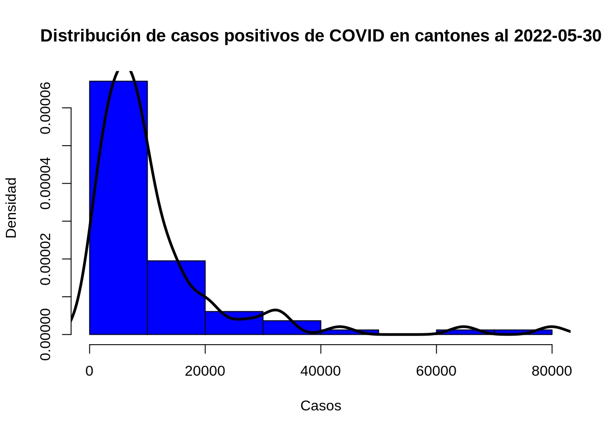
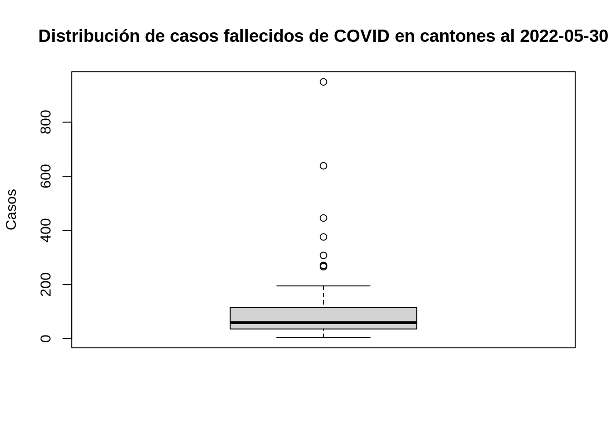
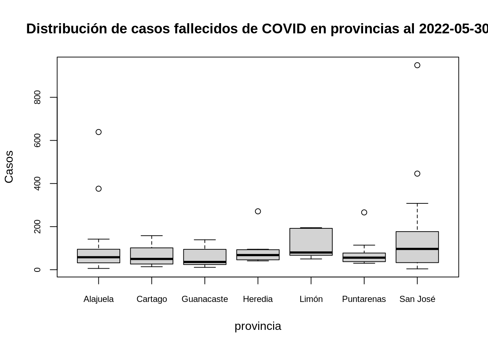
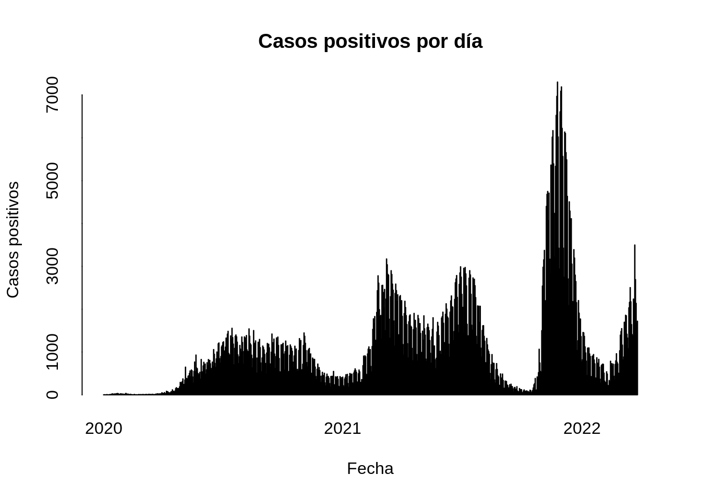
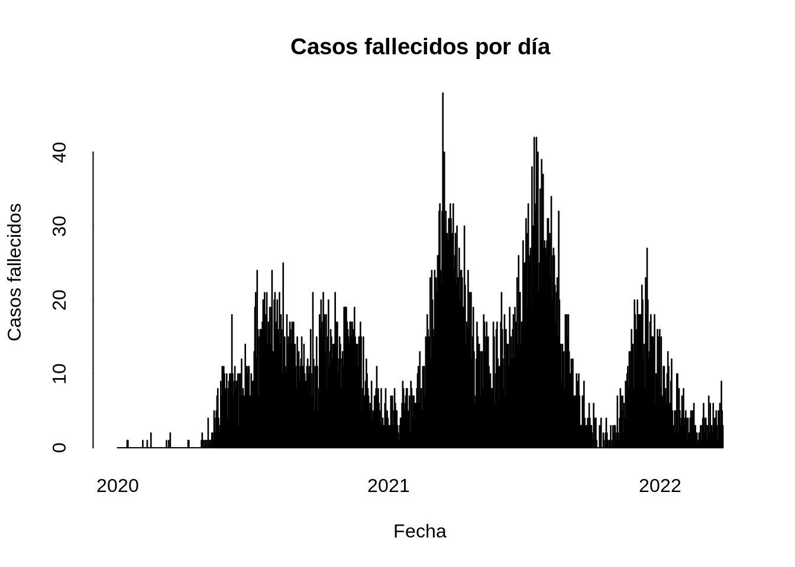
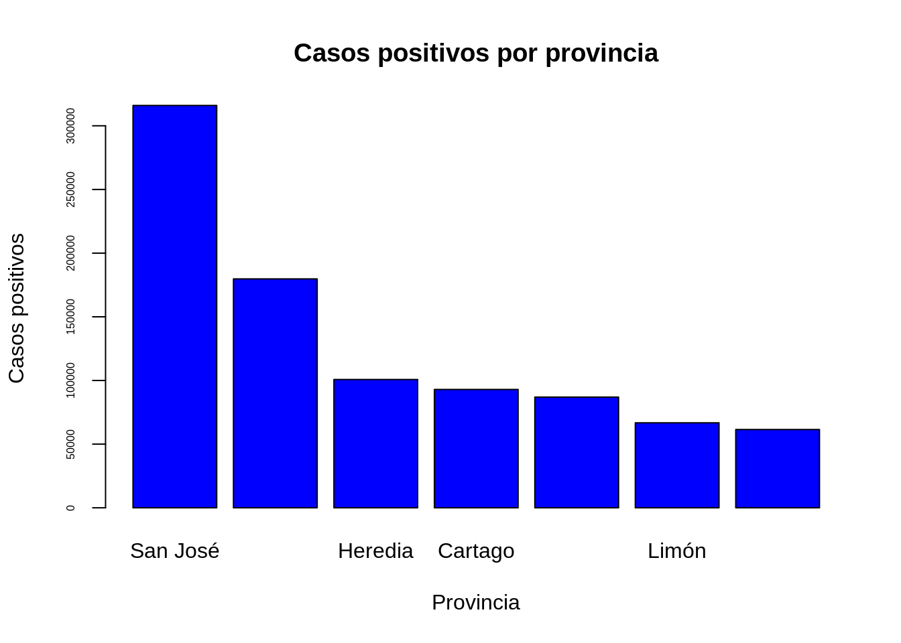
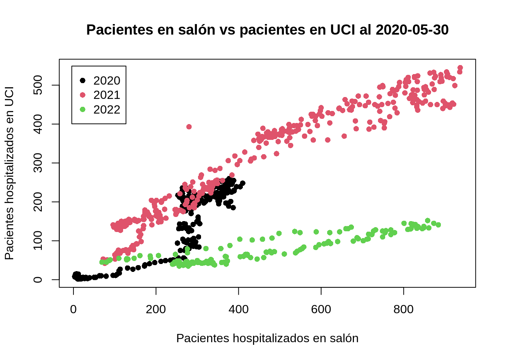
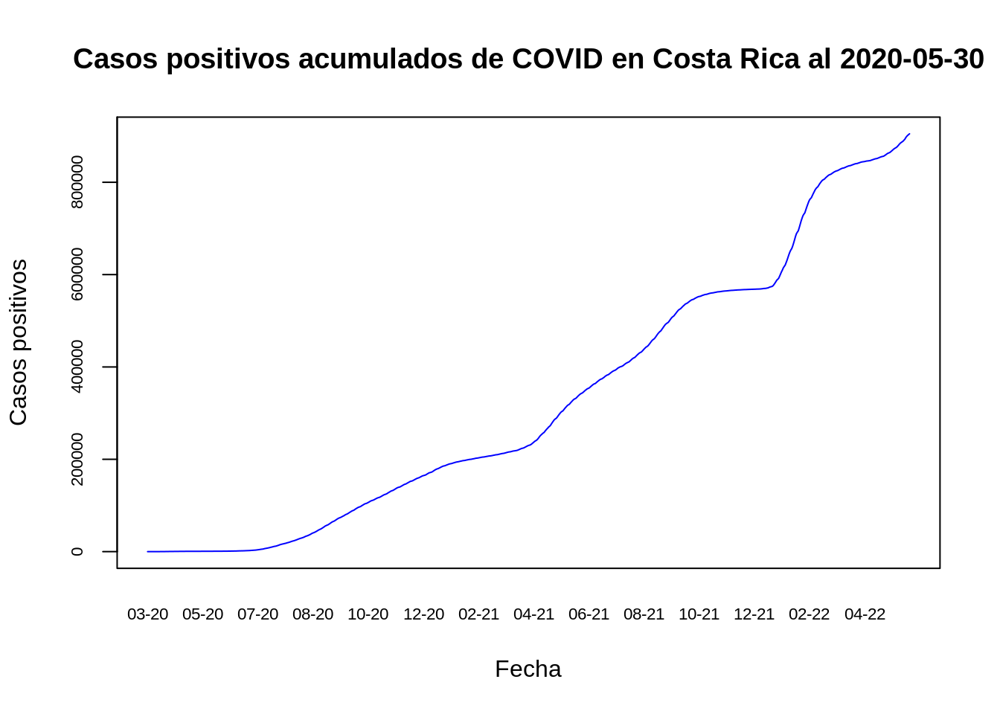
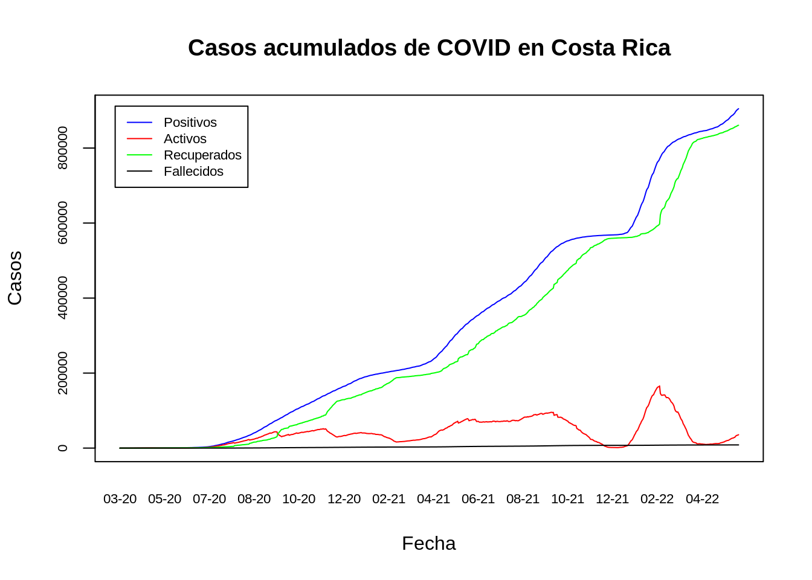

# Se le da preferencia a la notación fija (sobre la científica) a menos que el número tenga más de siete dígitos
options(scipen = 7)Visualización de datos con funciones de graficación del paquete base de R
Presentación
Este documento presenta varios gráficos estadísticos generados con funciones del paquete base del lenguaje de programación R.
Tanto los datos como el código fuente están disponibles en https://github.com/pf0953-programacionr/2022-ii-graficacion-base.
Opciones generales de la sesión R
Se evita el uso de notación científica en gráficos y otras salidas, excepto en números de más de siete dígitos. Para esto, se emplea la función options() y su argumento scipen.
Conjuntos de datos
Casos de COVID-19 en Costa Rica
Estos datos son publicados por el Ministerio de Salud de Costa Rica en https://geovision.uned.ac.cr/oges/. Se distribuyen en archivos CSV, incluyendo un archivo de datos generales para todo el país y varios archivos con datos por cantón. La fecha de la última actualización es 2022-05-30.
Datos generales
Es un archivo que contiene una fila por día y varias columnas con cantidades de casos (positivos, fallecidos, en salón, en UCI, etc.).
Carga de datos
Se cargan en un dataframe de R con la función read.csv().
# Carga del archivo CSV de entrada en un dataframe
covid_general<- read.csv("datos/05_30_22_CSV_GENERAL.csv", sep = ";")Estructura del conjunto de datos
Se despliegan las columnas del conjunto de datos y sus tipos con la función str().
# Estructura del dataframe
str(covid_general)'data.frame': 816 obs. of 144 variables:
$ FECHA : chr "06/03/2020" "07/03/2020" "08/03/2020" "09/03/2020" ...
$ SE : int 10 10 11 11 11 11 11 11 11 12 ...
$ positivos : int 2 7 10 12 13 22 23 26 27 35 ...
$ nue_posi : int 2 5 3 2 1 9 1 3 1 8 ...
$ conf_lab : int NA NA NA NA NA NA NA NA NA NA ...
$ conf_nexo : int NA NA NA NA NA NA NA NA NA NA ...
$ muj_posi : int NA NA NA NA 7 14 14 14 15 19 ...
$ hom_posi : int NA NA NA NA 6 8 9 12 12 16 ...
$ extranj_posi : int NA NA NA NA 3 3 3 3 4 5 ...
$ costar_posi : int NA NA NA NA 10 19 20 23 23 30 ...
$ investig_posi : int NA NA NA NA 0 0 0 0 0 0 ...
$ adul_posi : int NA NA NA NA 9 18 19 21 22 28 ...
$ am_posi : int NA NA NA NA 2 2 2 3 3 3 ...
$ menor_posi : int NA NA NA NA 2 2 2 2 2 4 ...
$ eda_ignor_posi: int NA NA NA NA NA NA NA NA NA NA ...
$ edmin_posi : chr "" "" "" "" ...
$ edmax_posi : int NA NA NA NA NA NA NA NA NA NA ...
$ promedio_posi : chr "" "" "" "" ...
$ descartados : chr "" "" "" "" ...
$ nue_descar : chr "" "" "" "" ...
$ fallecidos : int 0 0 0 0 0 0 0 0 0 0 ...
$ nue_falleci : int 0 0 0 0 0 0 0 0 0 0 ...
$ muj_fall : int 0 0 0 0 0 0 0 0 0 0 ...
$ hom_fall : int 0 0 0 0 0 0 0 0 0 0 ...
$ emin_fall : int NA NA NA NA NA NA NA NA NA NA ...
$ emax_fall : int NA NA NA NA NA NA NA NA NA NA ...
$ promedio_fall : chr "" "" "" "" ...
$ adul_fall : int NA NA NA NA NA NA NA NA NA NA ...
$ am_fall : int NA NA NA NA NA NA NA NA NA NA ...
$ menor_fall : int NA NA NA NA NA NA NA NA NA NA ...
$ eda_igno_falle: int NA NA NA NA NA NA NA NA NA NA ...
$ hospital : int NA NA NA NA NA NA NA NA NA NA ...
$ nue_hospi : int NA NA NA NA NA NA NA NA NA NA ...
$ salon : int NA NA NA NA NA NA NA NA NA NA ...
$ nue_salon : int NA NA NA NA NA NA NA NA NA NA ...
$ UCI : int NA NA NA NA NA NA NA NA NA NA ...
$ nue_UCI : int NA NA NA NA NA NA NA NA NA NA ...
$ emin_UCI : int NA NA NA NA NA NA NA NA NA NA ...
$ emax_UCI : int NA NA NA NA NA NA NA NA NA NA ...
$ promedio_UCI : chr "" "" "" "" ...
$ RECUPERADOS : int 0 0 0 0 0 0 0 0 0 0 ...
$ NUE_RECUP : int 0 0 0 0 0 0 0 0 0 0 ...
$ MUJ_RECUP : int NA NA NA NA NA NA NA NA NA NA ...
$ HOM_RECUP : int NA NA NA NA NA NA NA NA NA NA ...
$ ADUL_RECUP : int NA NA NA NA NA NA NA NA NA NA ...
$ AM_RECUP : int NA NA NA NA NA NA NA NA NA NA ...
$ MENOR_RECUP : int NA NA NA NA NA NA NA NA NA NA ...
$ EDA_IGNO_RECUP: int NA NA NA NA NA NA NA NA NA NA ...
$ PROMEDIO_RECUP: chr "" "" "" "" ...
$ EDMIN_RECUP : chr "" "" "" "" ...
$ EDMAX_RECUP : int NA NA NA NA NA NA NA NA NA NA ...
$ Muestras : chr "" "" "" "" ...
$ MUEST_NEW : chr "" "" "" "" ...
$ DIA_COVID19 : int 0 1 2 3 4 5 6 7 8 9 ...
$ afec_posi : int NA NA NA NA NA NA NA NA NA 16 ...
$ afec_recu : int NA NA NA NA NA NA NA NA NA NA ...
$ afec_fall : int NA NA NA NA NA NA NA NA NA NA ...
$ activos : int 2 7 10 12 13 22 23 26 27 35 ...
$ nue_acti : int NA NA NA NA NA NA NA NA NA NA ...
$ muj_acti : int NA NA NA NA NA NA NA NA NA NA ...
$ hom_acti : int NA NA NA NA NA NA NA NA NA NA ...
$ adul_acti : int NA NA NA NA NA NA NA NA NA NA ...
$ am_acti : int NA NA NA NA NA NA NA NA NA NA ...
$ menor_acti : int NA NA NA NA NA NA NA NA NA NA ...
$ eda_igno_acti : int NA NA NA NA NA NA NA NA NA NA ...
$ edmin_acti : int NA NA NA NA NA NA NA NA NA NA ...
$ edmax_acti : chr "" "" "" "" ...
$ promedio_acti : int NA NA NA NA NA NA NA NA NA NA ...
$ letalidad : chr "0,00" "0,00" "0,00" "0,00" ...
$ por_recup : chr "0,00" "0,00" "0,00" "0,00" ...
$ por_activ : chr "100,00" "100,00" "100,00" "100,00" ...
$ transpor : int NA NA NA NA NA NA NA NA NA NA ...
$ HSJD_UCI : int NA NA NA NA NA NA NA NA NA NA ...
$ HSJD_SALON : int NA NA NA NA NA NA NA NA NA NA ...
$ CEACO_UCI : int NA NA NA NA NA NA NA NA NA NA ...
$ CEACO_SALON : int NA NA NA NA NA NA NA NA NA NA ...
$ HCG_UCI : int NA NA NA NA NA NA NA NA NA NA ...
$ HCG_SALON : int NA NA NA NA NA NA NA NA NA NA ...
$ HMEX_UCI : int NA NA NA NA NA NA NA NA NA NA ...
$ HMEX_SALON : int NA NA NA NA NA NA NA NA NA NA ...
$ HNN_UCI : int NA NA NA NA NA NA NA NA NA NA ...
$ HNN_SALON : int NA NA NA NA NA NA NA NA NA NA ...
$ HEB_UCI : int NA NA NA NA NA NA NA NA NA NA ...
$ HEB_SALON : int NA NA NA NA NA NA NA NA NA NA ...
$ HTF_UCI : int NA NA NA NA NA NA NA NA NA NA ...
$ HTF_SALON : int NA NA NA NA NA NA NA NA NA NA ...
$ HLA_UCI : int NA NA NA NA NA NA NA NA NA NA ...
$ HLA_SALON : int NA NA NA NA NA NA NA NA NA NA ...
$ HNPSI_UCI : int NA NA NA NA NA NA NA NA NA NA ...
$ HNPSI_SALON : int NA NA NA NA NA NA NA NA NA NA ...
$ HSRA_UCI : int NA NA NA NA NA NA NA NA NA NA ...
$ HSRA_SALON : int NA NA NA NA NA NA NA NA NA NA ...
$ HDGR_UCI : int NA NA NA NA NA NA NA NA NA NA ...
$ HDGR_SALON : int NA NA NA NA NA NA NA NA NA NA ...
$ HDSC_UCI : int NA NA NA NA NA NA NA NA NA NA ...
$ HDSC_SALON : int NA NA NA NA NA NA NA NA NA NA ...
$ HUP_UCI : int NA NA NA NA NA NA NA NA NA NA ...
$ HUP_SALON : int NA NA NA NA NA NA NA NA NA NA ...
$ HMT_UCI : int NA NA NA NA NA NA NA NA NA NA ...
[list output truncated]Muestra de los datos
Con la notación de paréntesis cuadrados ([]), se despliegan las 10 primeras filas (observaciones) y algunas columnas (variables) de interés.
# Despliegue de las 10 primeras filas y algunas columnas de interés
covid_general[1:10, c("FECHA",
"positivos",
"activos",
"RECUPERADOS",
"nue_posi",
"nue_falleci",
"fallecidos",
"salon",
"UCI")] FECHA positivos activos RECUPERADOS nue_posi nue_falleci fallecidos
1 06/03/2020 2 2 0 2 0 0
2 07/03/2020 7 7 0 5 0 0
3 08/03/2020 10 10 0 3 0 0
4 09/03/2020 12 12 0 2 0 0
5 10/03/2020 13 13 0 1 0 0
6 11/03/2020 22 22 0 9 0 0
7 12/03/2020 23 23 0 1 0 0
8 13/03/2020 26 26 0 3 0 0
9 14/03/2020 27 27 0 1 0 0
10 15/03/2020 35 35 0 8 0 0
salon UCI
1 NA NA
2 NA NA
3 NA NA
4 NA NA
5 NA NA
6 NA NA
7 NA NA
8 NA NA
9 NA NA
10 NA NAReducción de columnas
Se limita el conjunto de datos a las columnas que son de interés para el análisis.
# Selección de columnas de interés para el análisis
covid_general<-
covid_general[, c("FECHA",
"positivos",
"activos",
"RECUPERADOS",
"fallecidos",
"nue_posi",
"nue_falleci",
"salon",
"UCI")]Cambio de nombres y de tipos de datos de las columnas
Todos los nombres de las columnas se cambian a minúsculas con la función colnames(), para así tener un estilo consistente. Además, el tipo de la columna fecha se convierte de str a Date.
# Cambio de nombres de las columnas
colnames(covid_general) <-
c("fecha",
"positivos",
"activos",
"recuperados",
"fallecidos",
"nuevos_positivos",
"nuevos_fallecidos",
"salon",
"uci")
# Conversión de str a Date de la columna fecha
covid_general$fecha <- as.Date(covid_general$fecha, format = "%d/%m/%Y")
# Despliegue de las últimas 10 observaciones
tail(covid_general, n = 10) fecha positivos activos recuperados fallecidos nuevos_positivos
807 2022-05-21 886017 25857 851674 8486 1642
808 2022-05-22 887425 26549 852387 8489 1408
809 2022-05-23 888800 26857 853453 8490 1375
810 2022-05-24 891038 28117 854426 8495 2238
811 2022-05-25 893213 28566 856148 8499 2175
812 2022-05-26 896712 31441 856766 8505 3499
813 2022-05-27 899404 33124 857772 8508 2692
814 2022-05-28 901542 34163 858862 8517 2138
815 2022-05-29 903213 34507 860184 8522 1671
816 2022-05-30 904934 35698 860711 8525 1721
nuevos_fallecidos salon uci
807 5 283 42
808 3 299 46
809 1 300 49
810 5 301 45
811 4 306 44
812 6 322 47
813 3 328 47
814 9 338 44
815 5 334 51
816 3 333 52Datos cantonales
Son cuatro archivos con casos positivos, activos, recuperados y fallecidos. Cada archivo tiene una fila para cada uno de los 82 cantones y una fila adicional para “Otros”. Hay una columna por cada día muestreado, con la cantidad de casos del tipo respectivo.
Carga de datos
# Carga de casos positivos
covid_cantonal_positivos <-
read.csv("datos/05_30_22_CSV_POSITIVOS.csv",
sep = ";",
fileEncoding = "iso-8859-1")
# Carga de casos activos
covid_cantonal_activos <-
read.csv("datos/05_30_22_CSV_ACTIVOS.csv",
sep = ";",
fileEncoding = "iso-8859-1")
# Carga de casos recuperados
covid_cantonal_recuperados <-
read.csv("datos/05_30_22_CSV_RECUP.csv",
sep = ";",
fileEncoding = "iso-8859-1")
# Carga de casos fallecidos
covid_cantonal_fallecidos <-
read.csv("datos/05_30_22_CSV_FALLECIDOS.csv",
sep = ";",
fileEncoding = "iso-8859-1")Estructura del conjunto de datos
# Estructura del dataframe
str(covid_cantonal_positivos)'data.frame': 84 obs. of 811 variables:
$ cod_provin : int 1 1 1 1 1 1 1 1 1 1 ...
$ provincia : chr "San José" "San José" "San José" "San José" ...
$ cod_canton : int 112 110 106 118 103 117 102 108 120 115 ...
$ canton : chr "Acosta" "Alajuelita" "Aserrí" "Curridabat" ...
$ X15.03.2020: int 0 0 0 0 4 0 4 0 0 0 ...
$ X16.03.2020: int 0 0 0 0 4 0 5 0 0 0 ...
$ X17.03.2020: int 0 0 0 1 4 0 5 0 0 0 ...
$ X18.03.2020: int 0 0 0 2 4 0 6 1 0 0 ...
$ X19.03.2020: int 0 0 0 3 4 0 9 1 0 0 ...
$ X20.03.2020: int 0 0 0 5 5 0 11 1 0 2 ...
$ X21.03.2020: int 0 0 0 5 4 0 11 0 0 3 ...
$ X22.03.2020: int 0 0 1 5 4 0 11 0 0 3 ...
$ X23.03.2020: int 0 0 2 5 5 0 11 7 0 3 ...
$ X24.03.2020: int 0 0 2 5 5 0 13 7 0 3 ...
$ X25.03.2020: int 0 0 2 5 7 0 13 8 0 5 ...
$ X26.03.2020: int 0 0 2 5 8 0 13 8 0 5 ...
$ X27.03.2020: int 0 0 2 7 12 0 14 9 0 5 ...
$ X28.03.2020: int 0 1 2 8 11 0 16 10 0 8 ...
$ X29.03.2020: int 0 2 2 8 13 0 17 10 0 8 ...
$ X30.03.2020: int 0 2 2 10 13 0 18 10 0 8 ...
$ X31.03.2020: int 0 2 2 11 15 0 19 11 0 8 ...
$ X01.04.2020: int 0 3 2 12 17 0 18 10 0 9 ...
$ X02.04.2020: int 0 3 2 14 18 0 18 11 0 9 ...
$ X03.04.2020: int 0 3 3 14 19 0 18 10 0 9 ...
$ X04.04.2020: int 0 3 3 14 21 0 18 11 0 9 ...
$ X05.04.2020: int 0 4 3 14 21 0 19 11 0 9 ...
$ X06.04.2020: int 0 4 3 14 23 0 19 11 0 11 ...
$ X07.04.2020: int 0 4 4 15 23 0 19 12 0 12 ...
$ X08.04.2020: int 0 6 6 15 27 0 19 13 0 14 ...
$ X09.04.2020: int 0 5 5 20 30 0 22 14 0 16 ...
$ X10.04.2020: int 0 7 6 20 31 0 23 16 0 16 ...
$ X11.04.2020: int 0 8 7 20 34 0 24 16 0 16 ...
$ X12.04.2020: int 0 8 8 22 37 0 27 17 0 16 ...
$ X13.04.2020: int 0 12 9 22 38 0 27 17 0 16 ...
$ X14.04.2020: int 0 12 9 22 39 0 27 18 0 16 ...
$ X15.04.2020: int 0 12 10 22 39 0 27 18 0 16 ...
$ X16.04.2020: int 0 12 11 22 42 0 27 18 0 16 ...
$ X17.04.2020: int 0 12 11 22 44 0 27 18 0 16 ...
$ X18.04.2020: int 0 13 11 22 44 0 27 19 0 16 ...
$ X19.04.2020: int 0 14 11 22 44 0 27 19 0 16 ...
$ X20.04.2020: int 0 14 11 22 44 0 27 19 0 16 ...
$ X21.04.2020: int 0 14 11 22 46 0 27 19 0 16 ...
$ X22.04.2020: int 0 14 11 22 46 0 29 19 0 16 ...
$ X23.04.2020: int 0 14 11 22 47 0 29 20 0 16 ...
$ X24.04.2020: int 0 14 11 22 47 0 29 20 0 16 ...
$ X25.04.2020: int 0 14 12 22 44 0 29 21 0 16 ...
$ X26.04.2020: int 0 14 12 22 45 0 29 21 0 16 ...
$ X27.04.2020: int 0 14 12 22 46 0 29 21 0 16 ...
$ X28.04.2020: int 0 14 12 22 46 0 29 22 0 16 ...
$ X29.04.2020: int 0 14 12 22 46 0 30 22 0 16 ...
$ X30.04.2020: int 0 14 12 22 46 0 30 23 0 16 ...
$ X01.05.2020: int 0 14 12 22 46 0 30 24 0 16 ...
$ X02.05.2020: int 0 14 12 22 46 0 30 24 0 16 ...
$ X03.05.2020: int 0 14 12 22 46 0 30 24 0 17 ...
$ X04.05.2020: int 0 14 12 22 46 0 30 26 0 17 ...
$ X05.05.2020: int 0 14 12 22 46 0 30 27 0 17 ...
$ X06.05.2020: int 0 14 12 22 47 0 30 30 0 17 ...
$ X07.05.2020: int 0 14 12 23 47 0 30 30 0 17 ...
$ X08.05.2020: int 0 14 13 23 48 0 30 30 0 17 ...
$ X09.05.2020: int 0 14 13 23 48 0 30 30 0 17 ...
$ X10.05.2020: int 0 14 13 24 48 0 30 30 0 17 ...
$ X11.05.2020: int 0 14 19 24 48 0 30 30 0 17 ...
$ X12.05.2020: int 0 14 19 24 48 0 30 30 0 17 ...
$ X13.05.2020: int 0 14 19 24 48 0 30 30 0 17 ...
$ X14.05.2020: int 0 14 19 25 48 0 30 30 0 17 ...
$ X15.05.2020: int 0 14 19 25 49 0 30 31 0 17 ...
$ X16.05.2020: int 0 14 20 25 48 0 30 31 0 17 ...
$ X17.05.2020: int 0 14 20 25 48 0 30 32 0 17 ...
$ X18.05.2020: int 0 14 20 25 48 0 30 32 0 17 ...
$ X19.05.2020: int 0 14 20 25 48 0 30 32 0 17 ...
$ X20.05.2020: int 0 14 20 25 48 0 30 32 0 18 ...
$ X21.05.2020: int 0 14 20 25 48 0 30 32 0 18 ...
$ X22.05.2020: int 0 14 20 25 48 0 30 33 0 18 ...
$ X23.05.2020: int 0 15 20 25 48 0 30 33 0 18 ...
$ X24.05.2020: int 0 15 20 25 47 0 30 34 0 18 ...
$ X25.05.2020: int 0 15 21 25 46 0 30 36 0 18 ...
$ X26.05.2020: int 0 15 21 25 46 0 30 37 0 18 ...
$ X27.05.2020: int 0 15 22 25 46 0 30 37 0 18 ...
$ X28.05.2020: int 0 15 22 25 46 0 30 38 0 18 ...
$ X29.05.2020: int 0 16 24 25 46 0 30 38 0 18 ...
$ X30.05.2020: int 0 16 24 25 46 0 30 38 0 19 ...
$ X31.05.2020: int 0 17 24 25 46 0 30 38 0 19 ...
$ X01.06.2020: int 0 17 24 25 46 0 30 38 0 19 ...
$ X02.06.2020: int 0 16 24 25 47 0 30 39 0 19 ...
$ X03.06.2020: int 0 16 24 25 53 0 30 39 0 19 ...
$ X04.06.2020: int 0 16 24 25 54 0 30 39 0 19 ...
$ X05.06.2020: int 0 16 24 25 55 0 31 39 0 19 ...
$ X06.06.2020: int 0 20 28 26 53 0 31 41 0 19 ...
$ X07.06.2020: int 0 19 28 26 53 0 31 43 0 19 ...
$ X08.06.2020: int 0 23 28 27 53 0 31 43 0 19 ...
$ X09.06.2020: int 0 23 28 28 53 0 31 46 0 19 ...
$ X10.06.2020: int 0 26 28 28 55 0 32 47 0 19 ...
$ X11.06.2020: int 0 28 28 29 56 0 32 48 0 20 ...
$ X12.06.2020: int 0 30 29 29 57 0 34 50 0 20 ...
$ X13.06.2020: int 0 33 29 29 57 0 42 50 0 19 ...
$ X14.06.2020: int 0 32 29 29 57 0 42 51 0 19 ...
$ X15.06.2020: int 0 33 29 29 57 0 42 53 0 19 ...
$ X16.06.2020: int 0 47 29 29 58 0 43 54 0 19 ...
$ X17.06.2020: int 1 54 29 29 61 0 43 54 0 19 ...
[list output truncated]Muestra de los datos
# Despliegue de las 10 primeras filas y algunas columnas de interés
covid_cantonal_positivos[1:10, c("provincia",
"canton",
"X30.05.2022")] provincia canton X30.05.2022
1 San José Acosta 4104
2 San José Alajuelita 18973
3 San José Aserrí 10880
4 San José Curridabat 14518
5 San José Desamparados 43283
6 San José Dota 834
7 San José Escazú 15134
8 San José Goicoechea 25497
9 San José León Cortés Castro 1339
10 San José Montes de Oca 9987Reducción de columnas
# Selección de columnas de interés para el análisis
covid_cantonal_positivos <-
covid_cantonal_positivos[, c("provincia",
"canton",
"X30.05.2022")]
covid_cantonal_activos <-
covid_cantonal_activos[, c("provincia",
"canton",
"X30.05.2022")]
covid_cantonal_recuperados <-
covid_cantonal_recuperados[, c("provincia",
"canton",
"X30.05.2022")]
covid_cantonal_fallecidos <-
covid_cantonal_fallecidos[, c("provincia",
"canton",
"X30.05.2022")]Cambio de nombre de columnas y eliminación de filas innecesarias
# Eliminación de filas con valores nulos
covid_cantonal_positivos <-
covid_cantonal_positivos[!is.na(covid_cantonal_positivos$X30.05.2022),]
covid_cantonal_activos <-
covid_cantonal_activos[!is.na(covid_cantonal_activos$X30.05.2022),]
covid_cantonal_recuperados <-
covid_cantonal_recuperados[!is.na(covid_cantonal_recuperados$X30.05.2022),]
covid_cantonal_fallecidos <-
covid_cantonal_fallecidos[!is.na(covid_cantonal_fallecidos$X30.05.2022),]
# Eliminación de fila con canton=="Otros"
covid_cantonal_positivos <-
covid_cantonal_positivos[covid_cantonal_positivos$canton != "Otros",]
covid_cantonal_activos <-
covid_cantonal_activos[covid_cantonal_activos$canton != "Otros",]
covid_cantonal_recuperados <-
covid_cantonal_recuperados[covid_cantonal_recuperados$canton != "Otros",]
covid_cantonal_fallecidos <-
covid_cantonal_fallecidos[covid_cantonal_fallecidos$canton != "Otros",]
# Cambio de nombre de columnas
colnames(covid_cantonal_positivos) <-
c("provincia",
"canton",
"positivos")
colnames(covid_cantonal_activos) <-
c("provincia",
"canton",
"activos")
colnames(covid_cantonal_recuperados) <-
c("provincia",
"canton",
"recuperados")
colnames(covid_cantonal_fallecidos) <-
c("provincia",
"canton",
"fallecidos")
# Despliegue de las últimas 10 observaciones
tail(covid_cantonal_positivos, n = 10) provincia canton positivos
73 Puntarenas Osa 5527
74 Puntarenas Parrita 3397
75 Puntarenas Puntarenas 28090
76 Puntarenas Quepos 7158
77 Limón Guácimo 7842
78 Limón Limón 16822
79 Limón Matina 5822
80 Limón Pococí 20449
81 Limón Siquirres 10349
82 Limón Talamanca 5468Pasajeros del Titanic
Este es el conjunto de datos de entrenamiento de la competencia Titanic - Machine Learning from Disaster organizada por Kaggle. El archivo también está disponible en https://github.com/pf3311-cienciadatosgeoespaciales/2021-iii/blob/main/contenido/b/datos/entrenamiento.csv.
Carga de datos
# Pasajeros en el conjunto de datos de entrenamiento
titanic <- read.csv("datos/pasajeros-titanic-entrenamiento.csv")Estructura del conjunto de datos
# Estructura del dataframe
str(titanic)'data.frame': 891 obs. of 12 variables:
$ PassengerId: int 1 2 3 4 5 6 7 8 9 10 ...
$ Survived : int 0 1 1 1 0 0 0 0 1 1 ...
$ Pclass : int 3 1 3 1 3 3 1 3 3 2 ...
$ Name : chr "Braund, Mr. Owen Harris" "Cumings, Mrs. John Bradley (Florence Briggs Thayer)" "Heikkinen, Miss. Laina" "Futrelle, Mrs. Jacques Heath (Lily May Peel)" ...
$ Sex : chr "male" "female" "female" "female" ...
$ Age : num 22 38 26 35 35 NA 54 2 27 14 ...
$ SibSp : int 1 1 0 1 0 0 0 3 0 1 ...
$ Parch : int 0 0 0 0 0 0 0 1 2 0 ...
$ Ticket : chr "A/5 21171" "PC 17599" "STON/O2. 3101282" "113803" ...
$ Fare : num 7.25 71.28 7.92 53.1 8.05 ...
$ Cabin : chr "" "C85" "" "C123" ...
$ Embarked : chr "S" "C" "S" "S" ...Muestra de los datos
# Despliegue de las 10 primeras filas y algunas columnas de interés
titanic[1:10, c("Survived", "Pclass", "Sex", "Age", "SibSp", "Parch")] Survived Pclass Sex Age SibSp Parch
1 0 3 male 22 1 0
2 1 1 female 38 1 0
3 1 3 female 26 0 0
4 1 1 female 35 1 0
5 0 3 male 35 0 0
6 0 3 male NA 0 0
7 0 1 male 54 0 0
8 0 3 male 2 3 1
9 1 3 female 27 0 2
10 1 2 female 14 1 0Visualizaciones de datos
Las siguientes visualizaciones se implementan con funciones de graficación del paquete base de R.
Histogramas
Un histograma es una representación gráfica de la distribución de una variable numérica en forma de barras (llamadas en inglés bins). La longitud de cada barra representa la frecuencia de un rango de valores de la variable. La graficación de la distribución de las variables es, frecuentemente, una de las primeras tareas que se realiza cuando se explora un conjunto de datos.
En el paquete base de R, los histogramas se crean la función hist().
El siguiente histograma muestra la distribución de la variable correspondiente a los casos de COVID positivos en los cantones de Costa Rica.
Code
# Histograma de casos positivos en cantones
hist(
covid_cantonal_positivos$positivos,
breaks = 8,
col = "blue",
main = "Distribución de casos positivos de COVID en cantones al 2022-05-30",
xlab = "Casos",
ylab = "Frecuencia"
)La función density() permite crear una estimación de densidad del kernel (Kernel Density Estimation, KDE), una curva que muestra la densidad de los datos.
Code
# Histograma de casos positivos en cantones
hist(
x = covid_cantonal_positivos$positivos,
breaks = 8,
col = "blue",
prob = TRUE,
main = "Distribución de casos positivos de COVID en cantones al 2022-05-30",
xlab = "Casos",
ylab = "Densidad"
)
# Curva de densidad
lines(density(covid_cantonal_positivos$positivos), lwd = 3, col = "black")
Ejercicios
- Construya un histograma que muestre la distribución de la edad de los pasajeros del Titanic. Incluya una curva de densidad.
- Construya un histograma que muestre la distribución de la cantidad de padres e hijos que viajaban con los pasajeros del Titanic. Incluya una curva de densidad.
- Construya un histograma que muestre la distribución de la cantidad de hermanos y cónyugues que viajaban con los pasajeros del Titanic. Incluya una curva de densidad.
Gráficos de caja
Un gráfico de caja (boxplot) muestra información de una variable numérica a través de su mediana, sus cuartiles (Q1, Q2 y Q3) y sus valores atípicos.
En el paquete base de R, los gráficos de caja se crean la función boxplot().
El siguiente gráfico de caja muestra la distribución de la variable correspondiente a los casos de COVID fallecidos en los cantones de Costa Rica.
Code
# Gráfico de caja
boxplot(
x = covid_cantonal_fallecidos$fallecidos,
main = "Distribución de casos fallecidos de COVID en cantones al 2022-05-30",
ylab = "Casos"
)
La distribución de la misma variable se muestra en el siguiente gráfico, pero agrupada por provincias.
Code
# Gráfico de caja
boxplot(
fallecidos ~ provincia,
data = covid_cantonal_fallecidos,
main = "Distribución de casos fallecidos de COVID en provincias al 2022-05-30",
ylab = "Casos",
cex.axis = 0.75
)
Ejercicios
- Construya un gráfico de caja de la edad de los pasajeros del Titanic.
- Agregue la distribución de la variable de sobrevivencia al gráfico del ejercicio anterior.
- Construya un gráfico de caja de la cantidad de padres e hijos que viajaban con los pasajeros del Titanic.
- Agregue la distribución de la variable de sobrevivencia al gráfico del ejercicio anterior.
- Construya un gráfico de caja de la cantidad de hermanos y cónyugues que viajaban con los pasajeros del Titanic.
- Agregue la distribución de la variable de sobrevivencia al gráfico del ejercicio anterior.
Gráficos de barras
Un gráfico de barras se compone de barras rectangulares con longitud proporcional a estadísticas (ej. frecuencias, promedios, mínimos, máximos) asociadas a una variable categórica o discreta. Las barras pueden ser horizontales o verticales y se recomienda que estén ordenadas según su longitud, a menos que exista un orden inherente a la variable (ej. el orden de los días de la semana).
El paquete base de R implementa gráficos de barras con la función barplot().
Los siguientes gráficos de barras muestran la cantidad diaria de nuevos casos positivos y nuevos casos fallecidos.
Code
# Gráfico de barras
barplot(
height=covid_general$nuevos_positivos,
names.arg=format(covid_general$fecha, "%Y"),
bty = "n",
tck = 0,
xaxt = "n",
space = 1,
main="Casos positivos por día",
xlab = "Fecha",
ylab = "Casos positivos"
)
# Fechas minima y máxima
x_min <- min(covid_general$fecha)
x_max <- max(covid_general$fecha)
# Formato del eje X
axis(
side = 1,
at = match(seq(as.Date(x_min), x_max, "years"), covid_general$fecha) * (1 + 1),
labels = format(seq(as.Date(x_min), x_max, "years"), "%Y"),
lwd = 0)
Code
# Gráfico de barras
barplot(
height=covid_general$nuevos_fallecidos,
names.arg=format(covid_general$fecha, "%Y"),
bty = "n",
tck = 0,
xaxt = "n",
space = 1,
main="Casos fallecidos por día",
xlab = "Fecha",
ylab = "Casos fallecidos"
)
# Fechas minima y máxima
x_min <- min(covid_general$fecha)
x_max <- max(covid_general$fecha)
# Formato del eje X
axis(
side = 1,
at = match(seq(as.Date(x_min), x_max, "years"), covid_general$fecha) * (1 + 1),
labels = format(seq(as.Date(x_min), x_max, "years"), "%Y"),
lwd = 0)
El siguiente gráfico muestra la cantidad de casos positivos agrupados por provincia.
Code
# Agrupación de casos por provincia
positivos_cantones_x_provincia <-
aggregate(data = covid_cantonal_positivos,
positivos ~ provincia,
FUN = sum,
na.rm = TRUE)
# Ordenamiento
positivos_cantones_x_provincia <-
positivos_cantones_x_provincia[order(-positivos_cantones_x_provincia$positivos),]
# Gráfico de barras
barplot(
height = positivos_cantones_x_provincia$positivos,
names.arg = positivos_cantones_x_provincia$provincia,
main = "Casos positivos por provincia",
xlab = "Provincia",
ylab = "Casos positivos",
cex.axis = 0.5,
col = "blue"
)
Ejercicios
- Construya un gráfico de barras que muestre la cantidad de pasajeros del Titanic por sexo.
- Construya un gráfico de barras que muestre la cantidad de pasajeros del Titanic por clase.
- Construya un gráfico de barras que muestre la cantidad de pasajeros del Titanic que sobrevivieron y que fallecieron.
Gráficos de dispersión
Un gráfico de dispersión (scatterplot) despliega los valores de dos variables numéricas, como puntos en un sistema de coordenadas. El valor de una variable se despliega en el eje X y el de la otra variable en el eje Y. Variables adicionales pueden ser mostradas mediante atributos de los puntos, tales como su tamaño, color o forma.
El paquete base de R implementa gráficos de dispersión por medio de la función plot().
Seguidamente, se utiliza un gráfico de dispersión para mostrar las cantidades diarias de pacientes hospitalizados en salón y de pacientes hospitalizados en unidades de cuidados intensivos (UCI) por causa del COVID.
Code
# Gráfico de dispersión
plot(
x = covid_general$salon,
y = covid_general$uci,
pch = 16, # https://www.r-bloggers.com/2021/06/r-plot-pch-symbols-different-point-shapes-in-r/
col = factor(format(covid_general$fecha, "%Y")), # color de los puntos con base en el año
main = "Pacientes en salón vs pacientes en UCI al 2020-05-30",
xlab = "Pacientes hospitalizados en salón",
ylab = "Pacientes hospitalizados en UCI"
)
# Leyenda
legend(
x = "topleft",
inset = 0.03,
pch = 16,
legend = levels(factor(format(covid_general$fecha, "%Y"))),
col = seq_along(factor(format(covid_general$fecha, "%Y")))
)
Ejercicios
- En un gráfico de dispersión, muestre las variables de casos positivos y casos fallecidos de COVID, del conjunto de datos generales.
Gráficos de líneas
Un gráfico de líneas muestra información en la forma de puntos de datos, llamados marcadores (markers), conectados por segmentos de líneas rectas. Es similar a un gráfico de dispersión pero, además de los segmentos de línea, tiene la particularidad de que los datos están ordenados, usualmente con respecto al eje X. Los gráficos de línea son usados frecuentemente para mostrar tendencias a través del tiempo.
El paquete base de R implementa gráficos de dispersión por medio de la función plot() y su argumento type=l.
El siguiente gráfico de líneas muestra la cantidad de casos positivos de COVID acumulados a través del tiempo.
Code
# Gráfico de líneas
plot(
covid_general$fecha,
covid_general$positivos,
type = "l",
xaxt = "n",
yaxt = "n",
main = "Casos positivos acumulados de COVID en Costa Rica al 2020-05-30",
xlab = "Fecha",
ylab = "Casos positivos",
col = "blue"
)
# Formato del eje X
axis(side = 1,
covid_general$fecha,
tick = FALSE,
format(covid_general$fecha, "%m-%y"),
cex.axis = .7)
# Formato del eje Y
axis(
side = 2,
covid_general$positivos,
labels = TRUE,
at = seq(0, 1000000, by = 200000),
cex.axis = .7
)
En el siguiente caso, se presenta un gráfico de líneas para múltiples variables: casos positivos, activos, recuperados y fallecidos.
Code
# Gráfico de líneas de casos positivos
plot(
covid_general$fecha,
covid_general$positivos,
type = "l",
xaxt = "n",
yaxt = "n",
main = "Casos acumulados de COVID en Costa Rica",
xlab = "Fecha",
ylab = "Casos",
col = "blue"
)
# Casos activos
lines(covid_general$fecha, covid_general$activos, col="red")
# Casos recuperados
lines(covid_general$fecha, covid_general$recuperados, col="green")
# Casos fallecidos
lines(covid_general$fecha, covid_general$fallecidos, col="black")
# Leyenda
legend(
x = "topleft",
inset = 0.03,
legend = c("Positivos", "Activos", "Recuperados", "Fallecidos"),
col = c("blue", "red", "green", "black"),
lty = 1,
cex = 0.7)
# Formato del eje X
axis(side = 1,
covid_general$fecha,
tick = FALSE,
format(covid_general$fecha, "%m-%y"),
cex.axis = .7)
# Formato del eje Y
axis(
side = 2,
covid_general$positivos,
labels = TRUE,
at = seq(0, 1000000, by = 200000),
cex.axis = .7
)
Ejercicios
- En un gráfico de líneas, muestre las variables de casos positivos de hombres y de casos positivos de mujeres, del conjunto de datos generales de COVID.